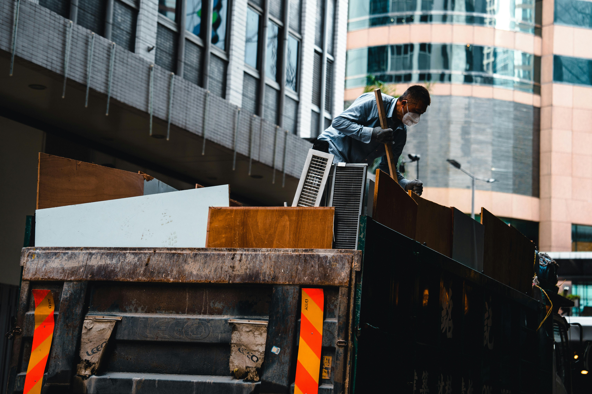

Taille de Benne
Devis
Services
Blog
Tel: 06 14 19 12 91
Taille de Benne
Devis
Services
Blog
Tel: 06 14 19 12 91
Location de bennes, débarras et nettoyage à Fegersheim avec SpeedBenne
Fegersheim, charmante commune de l'Eurométropole de Strasbourg, est le cadre idéal pour réaliser vos projets. Nous, chez SpeedBenne, proposons une large gamme de services pour répondre à vos besoins en matière de location de bennes, de débarras et de nettoyage. Que vous soyez un particulier ou une entreprise, nous avons des solutions adaptées pour tous vos projets. Nous nous engageons à offrir un service rapide, fiable et abordable.
Notre objectif est de rendre la gestion des déchets et le nettoyage plus simples et plus accessibles. Grâce à notre expérience et notre expertise, nous sommes le partenaire idéal pour vos projets à Fegersheim et dans les environs.
Nous offrons une variété de services pour rendre vos projets plus faciles et plus efficaces :
Nous avons différentes tailles de bennes disponibles, vous pouvez nous contacter pour savoir quelle taille de benne conviendrait le mieux à votre projet.
Vous souhaitez obtenir plus d'informations, poser une question ou demander un devis ? Nous sommes là pour vous aider ! N'hésitez pas à nous contacter par téléphone au 06 14 19 12 91, ou remplissez notre formulaire de contact pour recevoir un devis personnalisé dans les plus brefs délais.